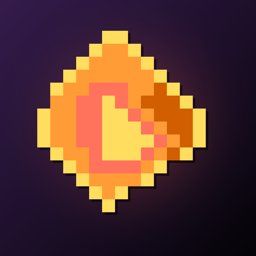
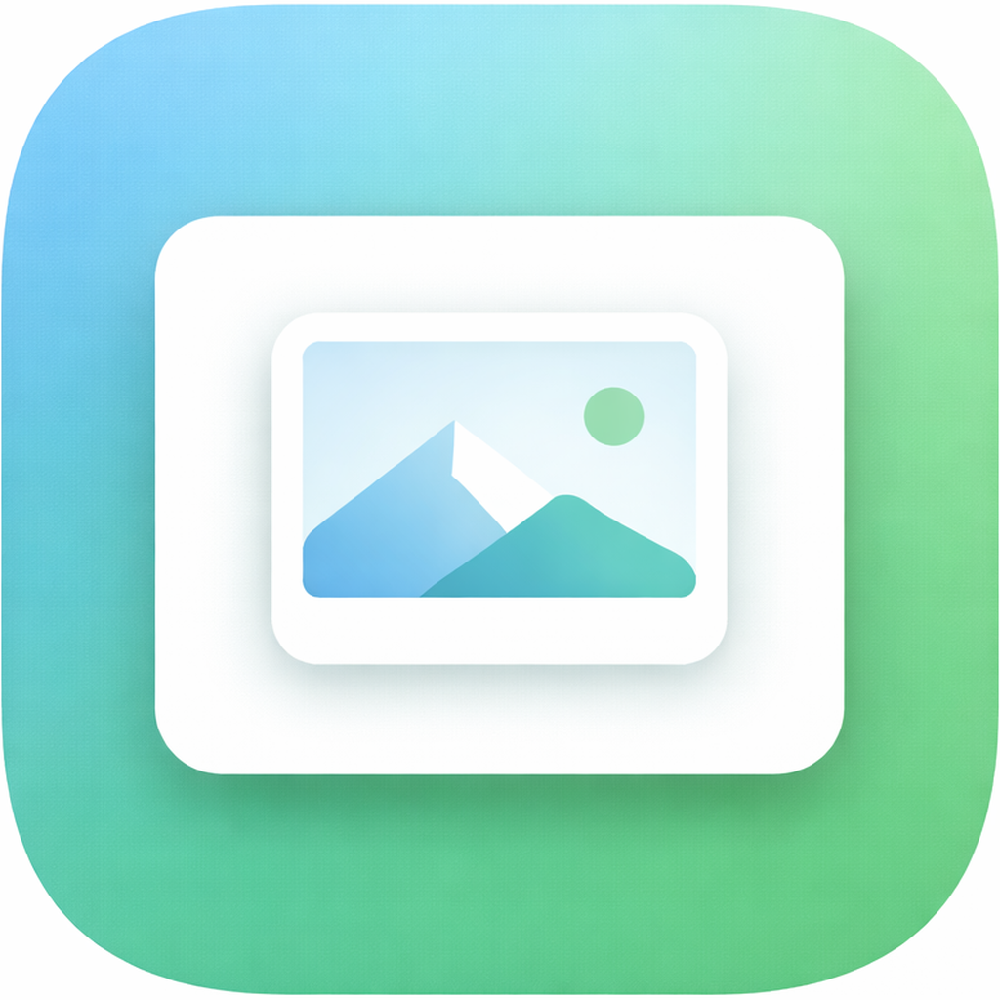
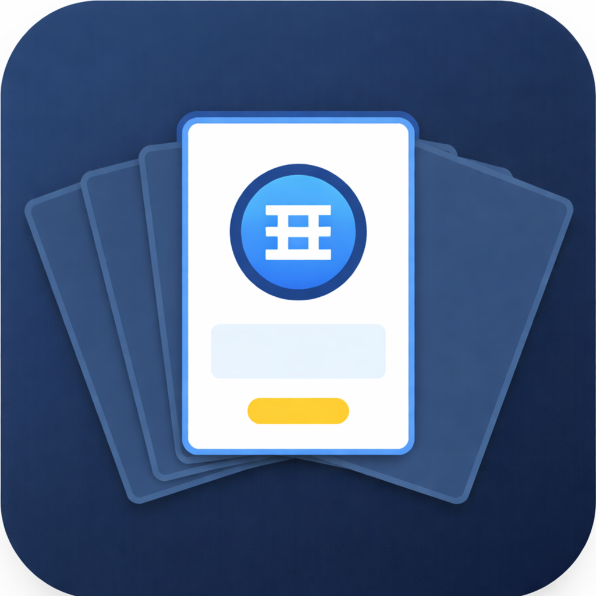

NOW
Showcase GigSRE
AWSインフラの設計・運用・自動化を担当。Terraformによるインフラのコード化、Datadogを用いた監視基盤構築、セキュアなアクセス制御設計を推進。予算管理・コスト最適化も担当。
AWS · EKS · Terraform · Athena · Glue · Datadog · GitHub Actions · Organizations
SITE RELIABILITY ENGINEER — SINCE 2015
大嶋 淳司 — Cloud Infrastructure / SRE · AWS · Odawara, JP
大学卒業後、受託でのインフラ設計・構築を経験。その後、事業会社でSREとしてAWSを中心にインフラ運用・監視設計・CI/CD・コスト最適化・予算管理。止めないことを仕事にしながら、夜は SwiftUI で遊び心のある iOS アプリを作って出荷している。
AWSインフラの設計・運用・自動化を担当。Terraformによるインフラのコード化、Datadogを用いた監視基盤構築、セキュアなアクセス制御設計を推進。予算管理・コスト最適化も担当。
広告プラットフォームのインフラ運用に副業として参画。Heroku+GCPからAWSへの全面移行を一人で担当、AWS Organizations/SSO設計、コーポレートサイトリニューアル（Lightsail+CloudFront）など幅広く推進。
AWS移行フェーズから参画。主にCICDを担当しecspressoによるデプロイフロー構築、CircleCIからGitHub Actionsへの移行、New Relic導入によるObservability強化を実施。コスト最適化のやりがいに目覚める。PHPカンファレンス2021にも登壇。
ZOZO Global、ZOZO SUITE、ZOZO MATプロジェクトにてインフラ構築を担当。ECS on EC2基盤の設計・構築、CI/CDパイプライン整備を担当。大規模トラフィックに耐えるスケーラブルなインフラを実現。
受託案件として多数のオンプレミス・VM環境のインフラ設計・構築を担当。新卒採用、新卒教育にも携わる。

↗タップと放置でコツコツ資産を増やし、1億円（FIRE）達成を目指すピクセルアート風の放置ゲーム。転生システムによる永続バフとオフライン報酬を備える。
どろだんごを毎日磨いて育てるiOS放置育成ゲーム。放置すると劣化し、最終的に割れてしまう。SwiftUIとObservationフレームワークで構築。
1分間の掃除タイマーアプリ。短い時間で掃除習慣を身につけるためのシンプルなiOSアプリ。
にんにく臭いメーター。にんにくを食べた後の息のにおいレベルを時間経過で可視化するiOSアプリ。

↗スクリーンショットや写真をSNS投稿向けに整える画像編集アプリ。アスペクト比や背景、装飾やテキストを簡単に調整できる。

↗日本全国の駅を訪れてコレクションする位置情報ゲーム。ミッションカードの駅に到着すると記録される。
「良い店なのに公式サイトがない。だから、勝手に作る。」公式サイトを持たない地元の優良店舗を紹介する非公式ポータルサイト。